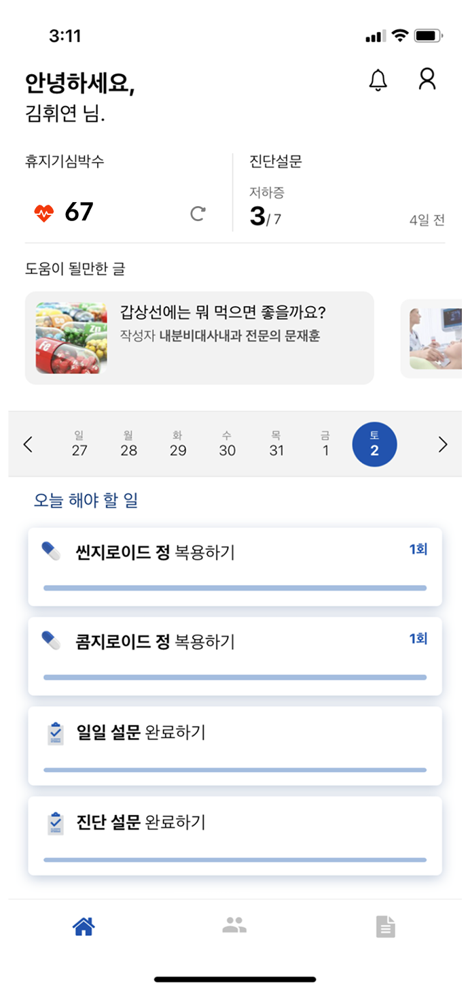
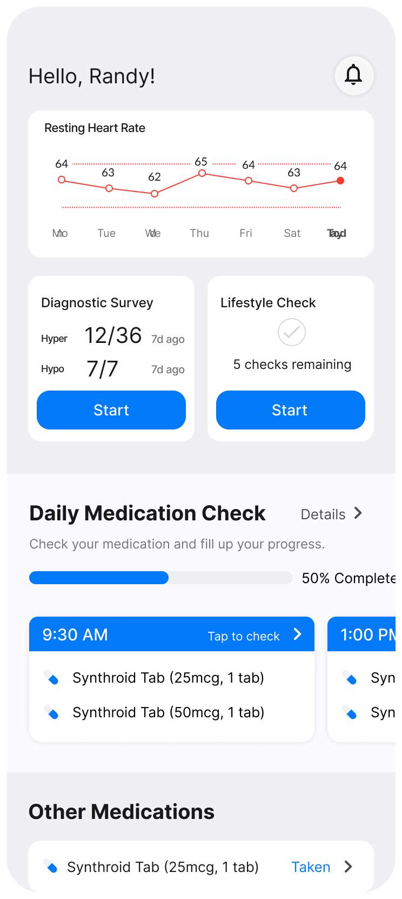
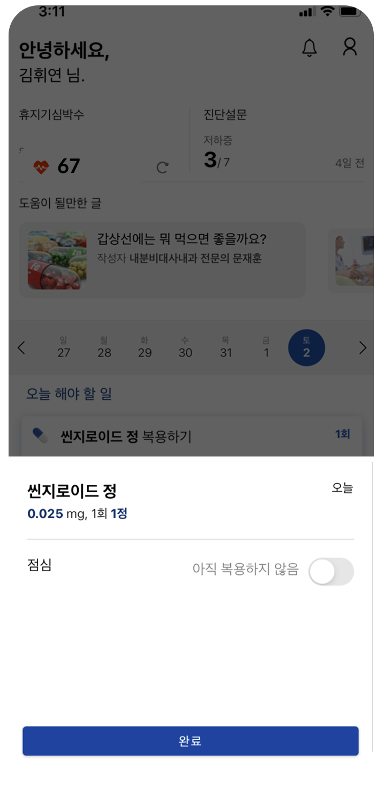
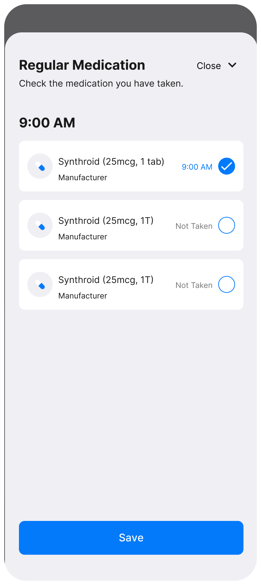
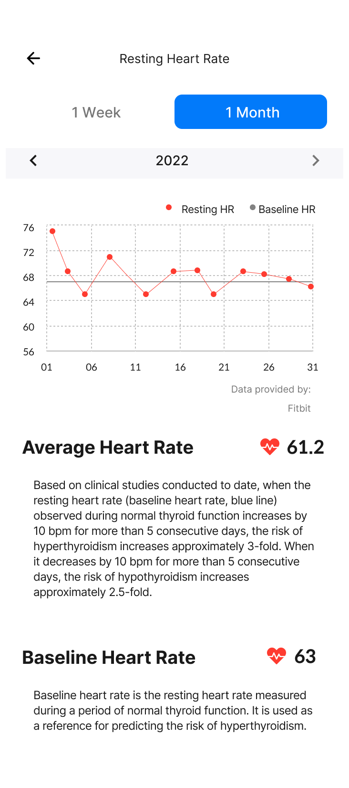
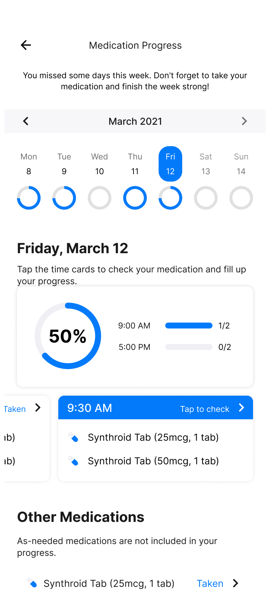

Data-Driven Product Launch & Improvement
Glandy: Thyroid Healthcare App Improvement & Launch
Redesigning a habit-formation healthcare app for thyroid patients through user research and Google Analytics funnel analysis.
Overview
Glandy is a habit-formation healthcare app for thyroid patients that combines resting-heart-rate tracking, diagnostic surveys, and a medication diary to help users manage a chronic condition day to day. During the paid beta, users were confused by basic functions and lacked motivation to complete daily tracking tasks. I led user interviews and GA funnel analysis to redefine the product around real disease-management needs, restructured the core app experience into three purpose-built tabs, and separately fixed a signup funnel that was losing more than half of new downloads — lifting download-to-signup conversion by 18.6 percentage points within two weeks of shipping.
Problem & Context
The beta app surfaced three distinct problems, uncovered through user-voice complaints and internal review:
- Users struggled to locate basic functions ("Where do I go to edit the survey?") and lacked motivation for daily-tracking features whose purpose they didn't understand ("Why do I need to measure my heart rate every day?")
- The company's existing feature definitions were business-driven rather than grounded in what hypothyroidism/hyperthyroidism patients actually needed at each stage of managing their condition — leaving it unclear whether the paid-beta feature set reflected what users actually wanted to use
- Separately, a marketing campaign was driving app downloads, but a large share of new users dropped off before completing signup, wasting acquisition spend
Process & Approach
Combined four research methods to redefine the product and fix the signup funnel:
- In-depth interviews (IDI) with 5 beta users who had used the service for 3+ months (ages 26–50, mix of hypothyroidism and hyperthyroidism diagnoses) surfaced real disease-management scenarios and pain points
- Findings were synthesized into 2 target personas differentiated by underlying motivation (emotional encouragement vs. professional/clinical trust), then mapped onto a user journey across pre-diagnosis, right-after-diagnosis, under-treatment, prognosis-monitoring, and full-recovery stages — with complications branching off under-treatment and a relapse path looping back to pre-diagnosis — to define which features the app needed at each stage
- Post-launch, 57 in-app community users were surveyed on feature usage, followed by IDIs with the 5 respondents who volunteered
- Separately, Google Analytics funnel analysis quantified drop-off at each step of the signup flow, isolating exactly where and how much of the funnel was leaking
User Research: In-Depth Interviews
To deeply understand personal experiences in thyroid disease management, conducted in-depth interviews with beta users who had used the app for over three months. Participants (N=5) were selected based on disease type, treatment duration, gender, and age to capture diverse perspectives.
Key Insights
- Although the app included a heart rate feature, most users preferred to check it via wearable device apps.
- Some users manually logged heart rate trends in personal notebooks.
- Long-term medication adherence was described as the most challenging aspect.
- The beta version did not support complex routines like fasting periods or dosage adjustments.
- As a chronic condition, thyroid disease requires continuous management, and users sought more actionable feedback.
- Some users questioned the purpose of data collection.
“It feels like the app is collecting data for the company, not for me.”
User Journey Map
Structuring essential app features by disease-cycle stage
- Check symptoms via diagnostic survey
- Hospital visit
- Register medication
- Gain information from medical columns
- Medication habit management
- Community
- Heart rate & lifestyle-survey tracking for self-management
- Community: share information, resolve concerns, empathize
↩ Relapse: Full Recovery can loop back to Pre-Diagnosis if symptoms return.
Signup Funnel Analysis
| Step | Value |
|---|---|
| Funnel entry | 99.5% |
| Tapped "Back" before login | 62.5% |
| Reached login | 46% |
| Tapped "Back" from login | 32.9% |
| Reached signup | 64.2% |
| Tapped "Back" from signup | 70.6% |
Solution & Design
Restructured the app's information architecture and shipped new capabilities directly from interview pain points:
- Reorganized overlapping, ambiguous functions into three purpose-built tabs: Home (daily essential routine — heart rate graph, diagnostic survey, daily medication check), Records (weekly health tracking — heart rate, medication achievement, weight), and Statistics (1+ month trends as a comprehensive report)
- Redesigned the resting-heart-rate widget from a single-day number into a 7-day trend chart (validated through internal usability testing and medical-expert input)
- Changed medication checking from a per-pill toggle to a single batch check-in by dose/time
- Shipped 3 new features: an eye-complication self-screening tool built with an ophthalmologist (selfie-based pre-diagnosis), an AI-assisted coaching report generated from lifestyle-survey and diagnostic data, and a peer community with expert columns
For the signup funnel, formed a hypothesis from the GA data — users without an account tap the most visible "Login" button, then bounce because there's no visible path to sign-up — and shipped 3 minimal, targeted changes:
- Rebalanced CTA button emphasis on the login/signup screen
- Collapsed the terms-agreement step into a single consent-and-continue button
- Added Naver/Kakao social login alongside Apple/Google/email to reduce friction for the 40–50s segment (the group most likely to drop off), who showed low preference for email verification (18.75%)
Home Screen Redesign

- Insufficient consideration of user needs — no way to check heart-rate trends
- Unclear visual priority between medication and symptom-survey elements
- Lack of motivation for logging, no feedback loop

- Resting heart rate monitoring surfaced as a trend chart
- Symptom survey & daily log combined into one glanceable flow
- Medication schedule management with reminders and progress
Daily Medication Check Redesign


Impact & Outcome
Download-to-signup conversion rose 18.6 percentage points (28.1% → 46.7%) within roughly two weeks of shipping the signup-funnel changes.
In the post-launch survey of 57 users, the redesigned core features matched actual usage: heart rate monitoring and the lifestyle/symptom survey ranked as the top two most-used features, validating the information-architecture decisions drawn from the interview findings.
Post-Launch Interviews: Feature Follow-Up
Ran follow-up in-depth interviews with the 5 survey respondents who volunteered, focusing on the two most-used features to understand what made them valuable day-to-day.

- “Showing not just weekly but monthly trends makes me want to keep wearing my watch!”
- “I've always been curious about the relationship between resting heart rate and thyroid disease, and I love how it's explained clearly.”

- “I really love the comments that help me reflect on my behavior.”
- “I love the feeling of managing and checking things on my own!”
“When my blood test results were bad, my heart rate records were high, and when my heart rate was low, my blood levels improved. After seeing the correlation between heart rate and thyroid levels with my own eyes, I felt Glandi was truly helpful.”
“After using the app, I developed a habit of checking my health. Through the lifestyle survey, I learned about eating habits I wasn't aware of, and now I'm more careful.”
Qualitatively, users reported forming new health-monitoring habits and independently noticing correlations between their heart rate trends and thyroid blood test results after the redesign.
Reflection
This project paired qualitative research (interviews, personas, journey mapping) with quantitative funnel analysis on the same product, applying each method where it was strongest — interviews to find the right features, funnel data to fix the right screen. The signup-funnel work in particular reflects a habit of forming a testable hypothesis from data before touching the UI, then verifying impact with a number after shipping.